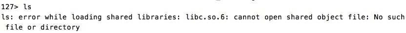
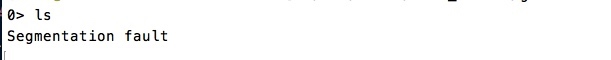
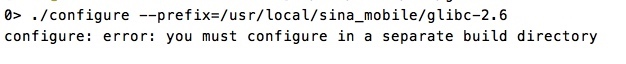
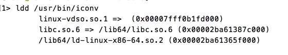
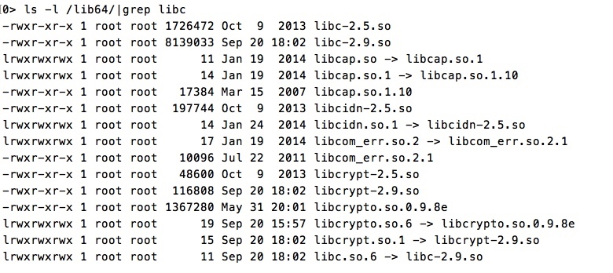
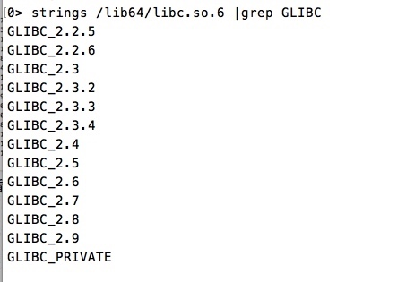

libc.so.6被删后导致系统无法使用的原因及解决方法
记一次升级glibc库发生的错误
今天给glibc库升级，发生了一件让我吓出一声汗的事情，我把动态库中的libc.so.6给删了，瞬间所有的非系统命令都无法使用，使用就报错


当时就吓尿了，生产环境被我玩坏了，怎么破。后来查原因才知道很多命令都依赖glibc，我把它的软链接删了系统找不到此库，那肯定玩完。
整个事情完整的经过是这样的：同事需要升级glibc库，于是此任务落到了我手中，当时没有想到那么多，以为和一般的软件一样随手一升就行了，后来发现有点复杂的，下了个2.9的版本（忽略下图的2.6，后来改成2.9了，2.6也一样，所有的glibc都会有这个问题），按照configure、make、make install三部曲来，结果第一步就失败了

后来才知道需要在glibc的同级目录下创建一个glibc-build目录，在glibc-build目录中执行configure，具体步骤参见http://blog.csdn.net/officercat/article/details/39520227
其实按照这个链接操作理论上是不会发生我这样坑爹的事情的，但是我作死了，在--prefix的时候没有使用/usr，而是安装在了自定义的目录中，当时想的是怕装在usr中会破坏现有环境（事实上glibc都要升级了还留着老版本干嘛？）
于是在我安装到自定义目录后，我开始将安装到自定义目录中的glibc动态库一个个拷贝到/lib64中（有的系统是/lib），就在这里我将libc.so.6删除了，准备重做一个软链接到新的glibc库中，删除之后就出现了文中开头的那一幕。我在贴个图就能明白为什么会发生这种情况了

不仅仅是iconv，基本上非系统命令都有这一条 libc.so.6 => /lib64/libc.so.6 ,因此libc.so.6至关重要，绝对不能删，不能改名，能不能覆盖就不知道了，想作死的可以试试
好了，死做完了，说说怎么解决问题吧。既然命令无法寻址到软连接，那么直接命令行给他就是了，网上看到了两种方法
1、ldconfig -l -v /lib64/libc-2.5.so
这里写的libc库必须是原来使用的而不是你更新过的
2、LD_PRELOAD=/lib64/libc-2.5.so ln -s /lib64/libc-2.5.so /lib64/libc.so.6
LD_PRELOAD允许你定义在程序运行前优先加载的动态链接库,因此在使用ln前就加载了lib库，而不是等到使用ln时加载，这样就能临时使用命令了
不仅仅是ln，只要加了LD_PRELOAD=/lib64/libc-2.5.so，后面可以跟一切因为libc.so.6被删不能用的命令。
我使用的是第二种方法
然后命令又能用了，然后我就老老实实的按照之前给出的连接安装到/usr，可以看到现在libc.so.6是软连接到libc-2.9.so的，最开始是连接到libc-2.5.so的。

使用strings命令查看，可以看到已经有2.9了
